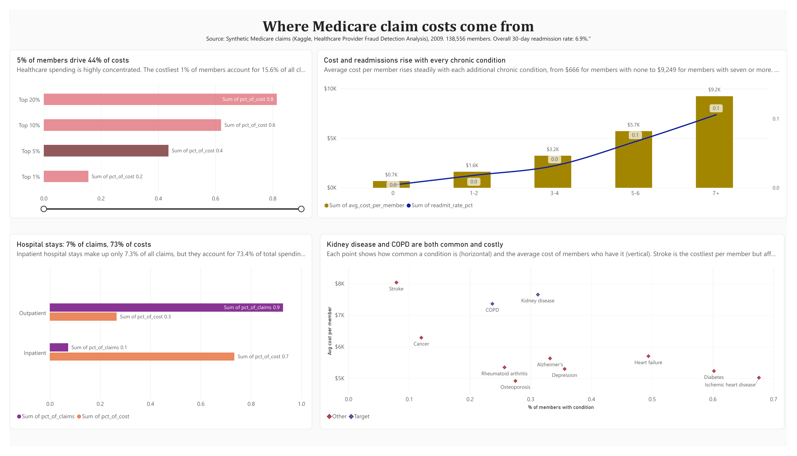
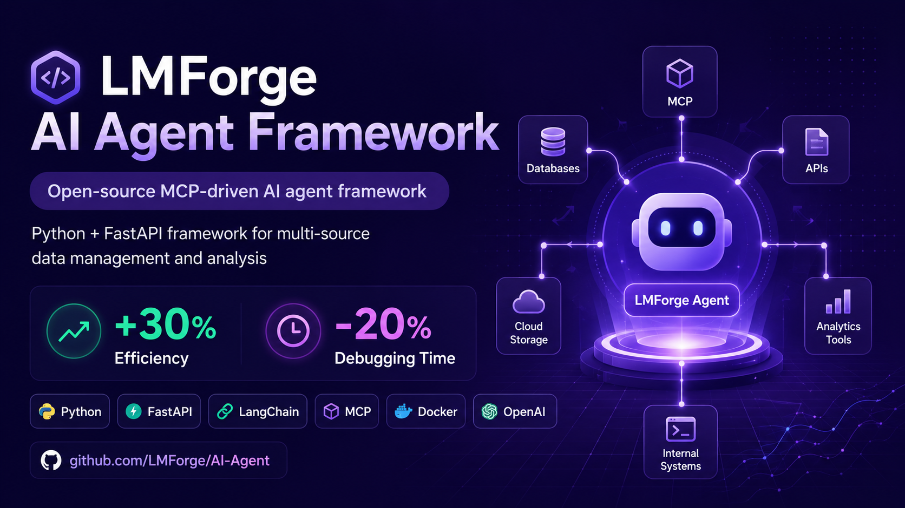

Data Analyst · Data Scientist
Data Analyst & Data Scientist building real-time clinical pipelines for healthcare. SQL · Python · Power BI · Tableau · FHIR. Google Data Analytics Certified. M.S. Data Science @ Michigan Tech · GPA 3.8 · OPT May 2026.
Data Analyst & Data Scientist with 1+ year building clinical analytics, SQL-driven quality systems, and machine learning that clinicians and health-plan teams can actually use.
At Michigan Tech's Biomedical Data Science Lab, I turn HL7/FHIR streams into clean longitudinal records, surface disease hotspots with SQL quality checks, and ship dashboards that cut manual reporting by 60%. On the analysis side, I've modeled Medicare cost drivers across 558K claims and built multimodal AI that reaches 96.4% accuracy always pairing the numbers with a clear story for technical and non-technical audiences.
Google Data Analytics Professional Certificate · M.S. Data Science @ Michigan Tech (GPA 3.8) · Open to Data Analyst and Data Scientist roles · OPT May 2026 · open to relocation.
From messy clinical data to clear dashboards and reliable models, the stack I reach for every day.
Building systems that run in real clinical and educational environments.
From healthcare AI to Medicare cost analysis each project solves a real-world challenge.

Cleaned, joined, and reconciled 3 relational tables (138,556 members, 558,211 claims) in BigQuery SQL, using window functions to flag 30-day readmissions and validating all totals to the dollar ($556.5M). Found that 5% of members drove 44% of cost and members with 5+ chronic conditions drove ~65% of spending; built a Power BI dashboard translating findings into care-management recommendations.
AI system combining ultrasound images and non-invasive ECG to identify brain malformations (CSP, LV) and cardiac arrhythmias, with SHAP/Grad-CAM for clinical interpretability.
Predicted GPU/CPU energy consumption before execution for efficient scheduling. Benchmarked 9 regression models on 29,647 NREL BUTTER-E records; Neural Network best (R²=0.9974, RMSE=0.0498).

Co-designed an open-source MCP-driven AI agent framework using Python and FastAPI — improved pipeline efficiency 30% and reduced data-quality debugging 20%.
Building deep expertise from theory to production deployment.
Focus: Data Science · Predictive Modeling · Data Engineering · AI/ML
Open to Data Analyst and Data Scientist roles. Available for full-time opportunities starting May 2026 on OPT authorization.